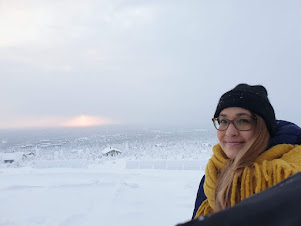

Olen intohimoinen harrastelija valokuvaaja, joka nauttii Lapin upeasta luonnosta ja maisemista.
Harrastan syksyisin patikointia, talvisin moottorikelkkailua ja muutaman kanoottiretkenkin olen seikkaillut.
Asun Oulussa, mutta juureni ovat Lapissa, rakas synnyinkaupunkini on Rovaniemi.
Vanha lappilainen sanonta kuuluukin: "Naisen voi viiä Lapista, mutta Lappia ei voi viedä naisesta".
Sydämeni sykkii erityisesti pohjoisen metsä- ja erämaavalokuville. Lapin maisemat tarjoavat loputtomasti inspiraatiota ja mahdollisuuksia tarttua kameraan.
Valokuvieni tarkoituksena on välittää katsojalle sama rauha ja voima, jota itse koen luonnossa liikkuessani.
Haluan tuoda esille Lapin kauneutta ja ainutlaatuisuutta valokuvieni kautta.
.
Oletko kiinnostunut kuvien käytöstä markkinointitarkoituksessa.
Ota yhteyttä sähköpostitse: meri.juopperi@hotmail.com
.